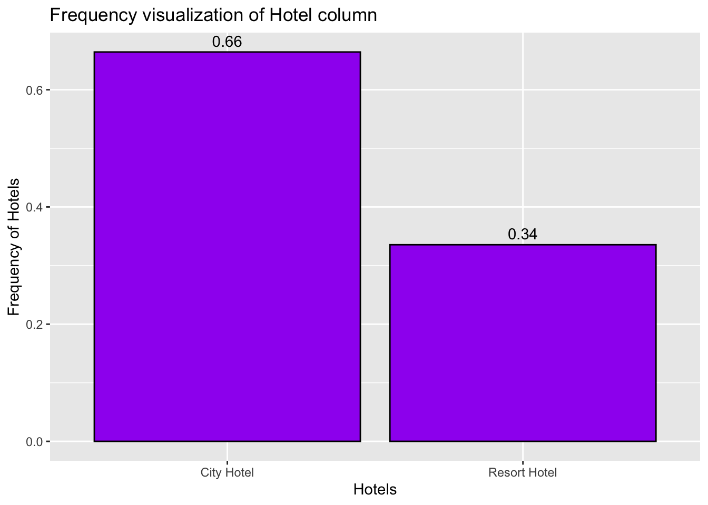
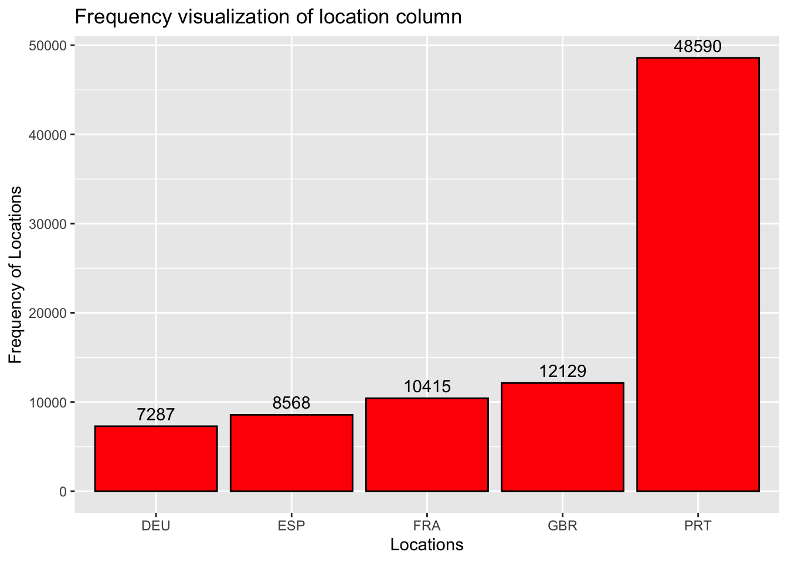
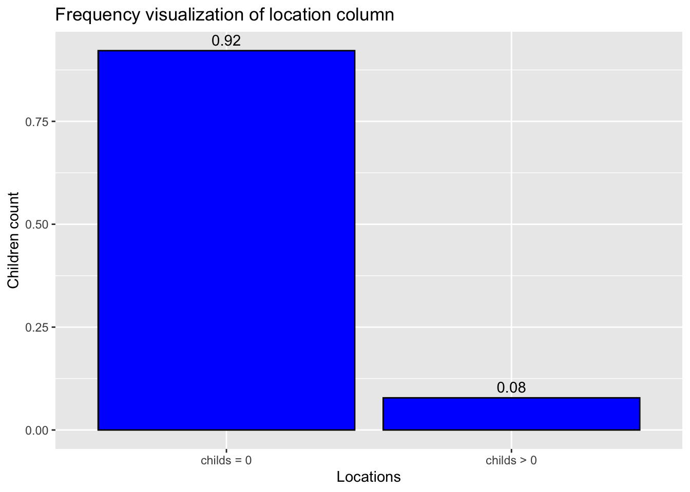
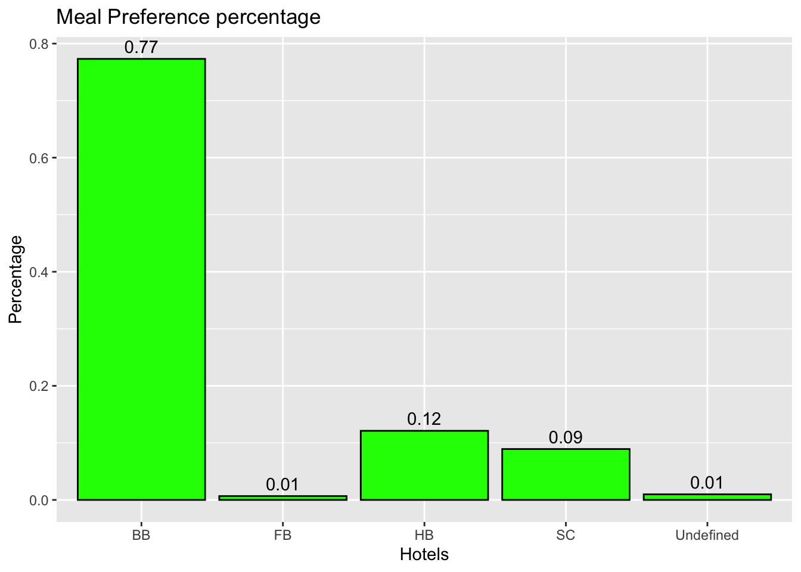
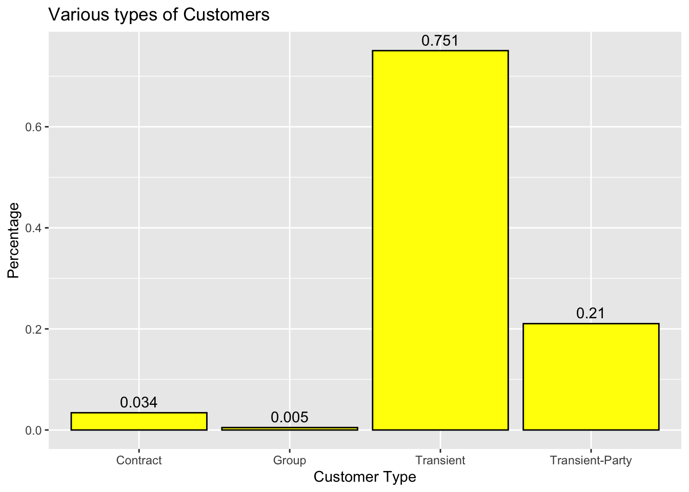
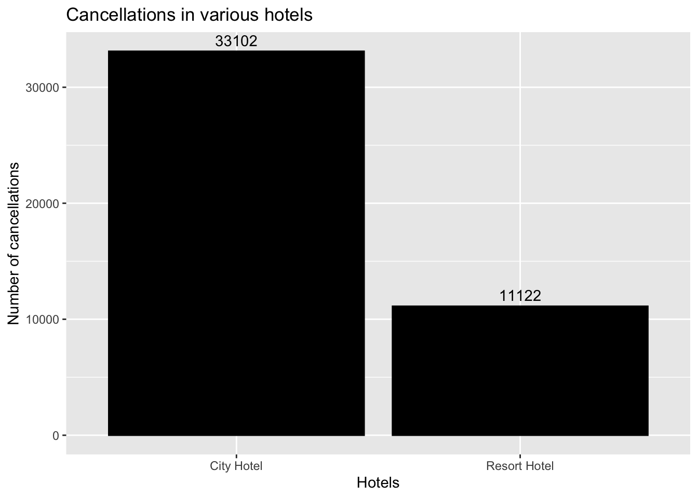
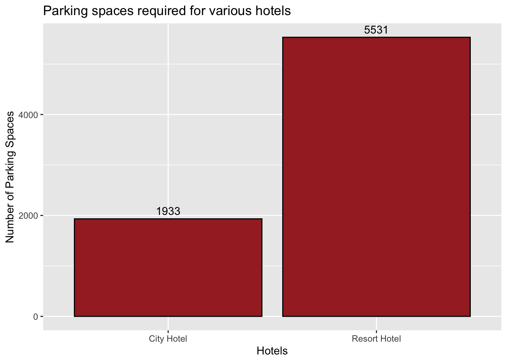
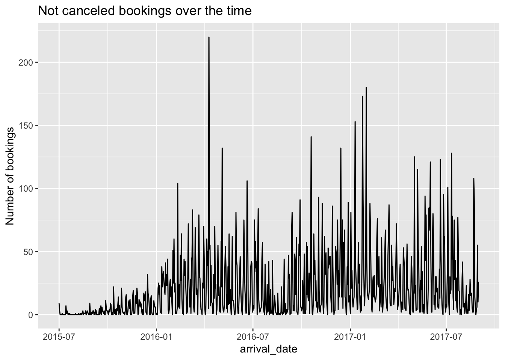

The emphasis in this homework is on exploratory data analysis using both graphics and statistics. You should build on your prior homework - incorporating any feedback and adjusting the code and text as needed. These homeworks are intended to be cumulative. Therefore, while it is fine to switch datasets, you will need to include all of the information from HW2 for your new (or old) dataset in this hw submission as well.
Include descriptive statistics (e.g, mean, median, and standard deviation for numerical variables, and frequencies and/or mode for categorical variables Include relevant visualizations using ggplot2 to complement these descriptive statistics. Be sure to use faceting, coloring, and titles as needed. Each visualization should be accompanied by descriptive text that highlights: the variable(s) used what questions might be answered with the visualizations what conclusions you can draw Use group_by() and summarise() to compute descriptive stats and/or visualizations for any relevant groupings. For example, if you were interested in how average income varies by state, you might compute mean income for all states combined, and then compare this to the range and distribution of mean income for each individual state in the US. Identify limitations of your visualization, such as: What questions are left unanswered with your visualizations What about the visualizations may be unclear to a naive viewer How could you improve the visualizations for the final project
Rows: 119390 Columns: 32
── Column specification ────────────────────────────────────────────────────────
Delimiter: ","
chr (13): hotel, arrival_date_month, meal, country, market_segment, distrib...
dbl (18): is_canceled, lead_time, arrival_date_year, arrival_date_week_numb...
date (1): reservation_status_date
ℹ Use `spec()` to retrieve the full column specification for this data.
ℹ Specify the column types or set `show_col_types = FALSE` to quiet this message.
This dataset describes the information of the reservations made in Resort Hotel and City Hotel. There are 119390 rows and 32 columns. Each columns represents various data such as for what dates and what hotel the booking was made, whether reservation is called or not and if the payment is made or not etc.
Tidy Data (as needed)
The data needs to be cleaned. The date is spread across in multiple columns. If is there in a single column it;’ll will be easy to calculate stats. Can also calculate the date with lead time and date of arrival columns.
The country column is placed in the 14th place, it should be moved up to 2nd place i.e after the hotel column. Created a new column arrival_date by getting the date from “arrival_date_day_of_month”, “arrival_date_month”,“arrival_date_year” columns. Removing these 3 columns and moving the arrival date column to column after “lead_time”. Creating the new column booking_date to know the date of booking with the information from columns lead_time and arrival_date. Created a new column “child” to get the total of children plus babies to replace the columns children and babies. After tidying up the data, total columns remaining are 28
Code
dplyr::select(dataset, 3:7 )
# A tibble: 119,390 × 5
lead_time arrival_date_year arrival_date_month arrival_date_week_nu…¹ arriv…²
<dbl> <dbl> <chr> <dbl> <dbl>
1 342 2015 July 27 1
2 737 2015 July 27 1
3 7 2015 July 27 1
4 13 2015 July 27 1
5 14 2015 July 27 1
6 14 2015 July 27 1
7 0 2015 July 27 1
8 9 2015 July 27 1
9 85 2015 July 27 1
10 75 2015 July 27 1
# … with 119,380 more rows, and abbreviated variable names
# ¹arrival_date_week_number, ²arrival_date_day_of_month
Code
#tidying the datasettidy_data <- dataset %>%relocate("country",.after ="hotel") %>%#relocating the country columnmutate(arrival_date = (str_c(arrival_date_day_of_month,arrival_date_month,arrival_date_year, sep ="/")), arrival_date =dmy(arrival_date), .after = lead_time) %>%#variable for arrival datemutate(booking_date = arrival_date-days(lead_time), .after = lead_time) %>%#variable to know the date of bookingmutate(childs = children + babies, .after = adults) %>% dplyr::select(-c("lead_time","children","babies"))tidy_data <- tidy_data[,-6:-9] #removed columns with arrival date informationtidy_data
From the summarytools output dataframe, we can see the stats of various values of each column. For example here we can see that there are 2 types of hotels(data type - character) and 66.4% people have their bookings in City hotel and rest in Resort hotel. Is_canceled column describes whether the booking has been canceled (numeric value 1) or not canceled (numeric value 0). 63% of the customers don’t cancel their reservations whereas 37% customers cancel their reservations.
Generated by summarytools 1.0.1 (R version 4.2.0) 2023-01-23
Potential Research Question
From this dataset following research questions can be answered
In what location do the customers prefer to stay? It’s clear from the statistics that 40.7% of the people are staying in the location PRT. If someone is planning on building or investing in a hotel, then these statistics can give a clear idea.
What percent of people stay with children and babies? With this question, hotels can make sure sufficient resources are available for children and babies
What kind of meals do customers prefer? This question can answer things like what kind of meals do prefer when living in a hotel and also help hotels to make food arrangements.
Customer_type answers what type of customers are staying in hotels.
Descriptive Visualizations
Following are the visualizations for the previous Research questions
# A tibble: 2 × 2
hotel n
<chr> <int>
1 City Hotel 79330
2 Resort Hotel 40060
Code
ggplot(CountHotels, aes(x = hotel, y = n/sum(n))) +#plot the x-axis and y-axisgeom_bar(fill ="purple", color="black", stat ="identity") +#to get the bar graphgeom_text(aes(label =round(n/sum(n),2)), vjust =-0.5)+# to get the labels for each bar plotlabs(x ="Hotels", y ="Frequency of Hotels",title ="Frequency visualization of Hotel column") #to get the labels of axis and title of the graph

variable used: hotel With this above visualization we can answer the question of which hotel is preferred more. By referring to the above plot, we can say that the City Hotel is preferred by higher percentage of people i.e 66%.
# A tibble: 178 × 2
country n
<chr> <int>
1 PRT 48590
2 GBR 12129
3 FRA 10415
4 ESP 8568
5 DEU 7287
6 ITA 3766
7 IRL 3375
8 BEL 2342
9 BRA 2224
10 NLD 2104
# … with 168 more rows
Code
CountLocation <- CountLocation %>%slice(1:5)ggplot(CountLocation, aes(x = country, y = n)) +#plot the x-axis and y-axisgeom_bar(fill ="red", color="black", stat ="identity") +#to get the bar graphgeom_text(aes(label = n, vjust =-0.5))+# to get the labels for each bar plotlabs(x ="Locations", y ="Frequency of Locations",title ="Frequency visualization of location column") #to get the labels of axis and title of the graph

Variable used: country This visualization answers the question of at what location are most of the hotels located? There are around 178 countries where city and resort hotel are located, out of those a bar graph has been plotted for the top 5 most visited countries. We can see that PRT country has highest visitors od 48590.
# A tibble: 2 × 2
childs n
<chr> <int>
1 childs = 0 110054
2 childs > 0 9332
Code
ggplot(CountChildren, aes(x = childs, y = n/sum(n))) +#plot the x-axis and y-axisgeom_bar(fill ="blue", color="black", stat ="identity") +#to get the bar graphgeom_text(aes(label =round(n/sum(n), 2), vjust =-0.5))+# to get the labels for each bar plotlabs(x ="Locations", y ="Children count",title ="Frequency visualization of location column") #to get the labels of axis and title of the graph

Variables used: childs This visualization answers the question of how many people prefer to come with children and babies? From the above plot we can infer that most of the people visit hotels without children. There are 0.92% of people visiting without children and 0.08% of people visiting with 1 or more children and babies.
ggplot(CountMeals, aes(x = meal, y = n/sum(n))) +#plot the x-axis and y-axisgeom_bar(fill ="green", color="black", stat ="identity") +#to get the bar graphgeom_text(aes(label =round(n/sum(n),2)), vjust =-0.5)+# to get the labels for each bar plotlabs(x ="Hotels", y ="Percentage",title ="Meal Preference percentage") #to get the labels of axis and title of the graph

Variable used: meal. The above visualization answers the question what meals do people prefer? We can see that 77% of the people prefer “BB” meal. The least prefered meal is “FB”.
Code
#count for customer_typeCountType <- tidy_data %>%count(customer_type)CountType
# A tibble: 4 × 2
customer_type n
<chr> <int>
1 Contract 4076
2 Group 577
3 Transient 89613
4 Transient-Party 25124
Code
ggplot(CountType, aes(x = customer_type, y = n/sum(n))) +#plot the x-axis and y-axisgeom_bar(fill ="yellow", color="black", stat ="identity") +#to get the bar graphgeom_text(aes(label =round(n/sum(n),3)), vjust =-0.5)+# to get the labels for each bar plotlabs(x ="Customer Type", y ="Percentage",title ="Various types of Customers") #to get the labels of axis and title of the graph

Variable used: customer_type This visualization answers the question what type of customers exist and their corresponding statistics. Most of the customer who visit the hotels are Transient type.
Grouping Visualizations
Following are the visualizations using group_by and summarise functions
Code
tidy_data %>%group_by(hotel) %>%summarise(sum_cancel =sum(is_canceled)) %>%ggplot(aes(x = hotel, y = sum_cancel)) +geom_bar(fill ="black", color="black", stat ="identity") +#to get the bar graphgeom_text(aes(label = sum_cancel), vjust =-0.5)+# to get the labels for each bar plotlabs(x ="Hotels", y ="Number of cancellations",title ="Cancellations in various hotels") #to get the labels of axis and title of the graph

From this visualization we can see the statistics of how many cancellations are made in various hotel. Number of cancellations in City hotel are 33102 whereas number of cancellations in Resort hotel are 11122.
Code
tidy_data %>%group_by(hotel) %>%summarise(parking =sum(required_car_parking_spaces)) %>%ggplot(aes(x = hotel, y = parking)) +geom_bar(fill ="brown", color="black", stat ="identity") +#to get the bar graphgeom_text(aes(label = parking), vjust =-0.5)+# to get the labels for each bar plotlabs(x ="Hotels", y ="Number of Parking Spaces",title ="Parking spaces required for various hotels") #to get the labels of axis and title of the graph

In this visualization we’ll know how many parking spaces are required for different hotels. From the above plot, city hotel takes up 1933 parking spaces and Resort hotel requires 5531 parking spaces.
Code
tidy_data %>%group_by(arrival_date) %>%summarise(bookings =sum(previous_bookings_not_canceled )) %>%arrange(arrival_date) %>%ggplot(aes(x=arrival_date)) +geom_line(aes(y=bookings)) +labs(title="Not canceled bookings over the time", y="Number of bookings") # title and caption # change to monthly ticks and labels

From this time series plot, we can observe that the in between the dates “2016-01” to “2016-07”, the hotels have seen a spike in the guest arrivals whereas they recorded the least guests between the dates “2015-07” and “2016-01”.
Future Scope
There is more scope for visualizations in this dataset like - using multiple variables to plot a single graph over the period of time. - one of the example is hotel in a particular country having a non canceled booking in a particular year. I’m planning on covering such multi variable plots in my final project.
:::
Source Code
---title: "HW 3"author: "Priya Marla"desription: "Exploratory data analysis"date: "01/22/2023"format: html: toc: true code-fold: true code-copy: true code-tools: truecategories: - hw3 - hotel_booking---```{r}#| label: setup#| warning: falselibrary(epiDisplay)library(dbplyr)library(tidyverse)library(here)library(lubridate)library(summarytools)library(ggplot2)knitr::opts_chunk$set(echo =TRUE)```## InstructionsThe emphasis in this homework is on exploratory data analysis using both graphics and statistics. You should build on your prior homework - incorporating any feedback and adjusting the code and text as needed. These homeworks are intended to be cumulative. Therefore, while it is fine to switch datasets, you will need to include all of the information from HW2 for your new (or old) dataset in this hw submission as well. Include descriptive statistics (e.g, mean, median, and standard deviation for numerical variables, and frequencies and/or mode for categorical variablesInclude relevant visualizations using ggplot2 to complement these descriptive statistics. Be sure to use faceting, coloring, and titles as needed. Each visualization should be accompanied by descriptive text that highlights: the variable(s) used what questions might be answered with the visualizations what conclusions you can drawUse group_by() and summarise() to compute descriptive stats and/or visualizations for any relevant groupings. For example, if you were interested in how average income varies by state, you might compute mean income for all states combined, and then compare this to the range and distribution of mean income for each individual state in the US.Identify limitations of your visualization, such as: What questions are left unanswered with your visualizations What about the visualizations may be unclear to a naive viewer How could you improve the visualizations for the final project## Read in data```{r}dataset <-here("posts","_data","hotel_bookings.csv") %>%read_csv()dataset```### Briefly describe the dataThis dataset describes the information of the reservations made in Resort Hotel and City Hotel. There are 119390 rows and 32 columns. Each columns represents various data such as for what dates and what hotel the booking was made, whether reservation is called or not and if the payment is made or not etc.## Tidy Data (as needed)The data needs to be cleaned. The date is spread across in multiple columns. If is there in a single column it;'ll will be easy to calculate stats. Can also calculate the date with lead time and date of arrival columns.The country column is placed in the 14th place, it should be moved up to 2nd place i.e after the hotel column. Created a new column arrival_date by getting the date from "arrival_date_day_of_month", "arrival_date_month","arrival_date_year" columns. Removing these 3 columns and moving the arrival date column to column after "lead_time". Creating the new column booking_date to know the date of booking with the information from columns lead_time and arrival_date.Created a new column "child" to get the total of children plus babies to replace the columns children and babies.After tidying up the data, total columns remaining are 28```{r}dplyr::select(dataset, 3:7 )#tidying the datasettidy_data <- dataset %>%relocate("country",.after ="hotel") %>%#relocating the country columnmutate(arrival_date = (str_c(arrival_date_day_of_month,arrival_date_month,arrival_date_year, sep ="/")), arrival_date =dmy(arrival_date), .after = lead_time) %>%#variable for arrival datemutate(booking_date = arrival_date-days(lead_time), .after = lead_time) %>%#variable to know the date of bookingmutate(childs = children + babies, .after = adults) %>% dplyr::select(-c("lead_time","children","babies"))tidy_data <- tidy_data[,-6:-9] #removed columns with arrival date informationtidy_data```## Narrative of DatasetFrom the summarytools output dataframe, we can see the stats of various values of each column. For example here we can see that there are 2 types of hotels(data type - character) and 66.4% people have their bookings in City hotel and rest in Resort hotel. Is_canceled column describes whether the booking has been canceled (numeric value 1) or not canceled (numeric value 0). 63% of the customers don't cancel their reservations whereas 37% customers cancel their reservations. ```{r}print(summarytools::dfSummary(tidy_data,varnumbers =FALSE,plain.ascii =FALSE, style ="grid", graph.magnif =0.70, valid.col =FALSE),method ='render',table.classes ='table-condensed')```## Potential Research QuestionFrom this dataset following research questions can be answered- In what location do the customers prefer to stay? It's clear from the statistics that 40.7% of the people are staying in the location PRT. If someone is planning on building or investing in a hotel, then these statistics can give a clear idea.- What percent of people stay with children and babies? With this question, hotels can make sure sufficient resources are available for children and babies- What kind of meals do customers prefer? This question can answer things like what kind of meals do prefer when living in a hotel and also help hotels to make food arrangements.- Customer_type answers what type of customers are staying in hotels.## Descriptive VisualizationsFollowing are the visualizations for the previous Research questions```{r}CountHotels <- tidy_data %>%count(hotel) CountHotelsggplot(CountHotels, aes(x = hotel, y = n/sum(n))) +#plot the x-axis and y-axisgeom_bar(fill ="purple", color="black", stat ="identity") +#to get the bar graphgeom_text(aes(label =round(n/sum(n),2)), vjust =-0.5)+# to get the labels for each bar plotlabs(x ="Hotels", y ="Frequency of Hotels",title ="Frequency visualization of Hotel column") #to get the labels of axis and title of the graph```variable used: hotelWith this above visualization we can answer the question of which hotel is preferred more. By referring to the above plot, we can say that the City Hotel is preferred by higher percentage of people i.e 66%.```{r}CountLocation <- tidy_data %>%count(country) %>%arrange(desc(n))CountLocationCountLocation <- CountLocation %>%slice(1:5)ggplot(CountLocation, aes(x = country, y = n)) +#plot the x-axis and y-axisgeom_bar(fill ="red", color="black", stat ="identity") +#to get the bar graphgeom_text(aes(label = n, vjust =-0.5))+# to get the labels for each bar plotlabs(x ="Locations", y ="Frequency of Locations",title ="Frequency visualization of location column") #to get the labels of axis and title of the graph```Variable used: countryThis visualization answers the question of at what location are most of the hotels located?There are around 178 countries where city and resort hotel are located, out of those a bar graph has been plotted for the top 5 most visited countries. We can see that PRT country has highest visitors od 48590.```{r}CountChildren <- tidy_data %>%count(childs >0) %>%drop_na()colnames(CountChildren) <-c("childs","n")CountChildren$childs[CountChildren$childs ==TRUE] <-'childs > 0'CountChildren$childs[CountChildren$childs ==FALSE] <-'childs = 0'CountChildrenggplot(CountChildren, aes(x = childs, y = n/sum(n))) +#plot the x-axis and y-axisgeom_bar(fill ="blue", color="black", stat ="identity") +#to get the bar graphgeom_text(aes(label =round(n/sum(n), 2), vjust =-0.5))+# to get the labels for each bar plotlabs(x ="Locations", y ="Children count",title ="Frequency visualization of location column") #to get the labels of axis and title of the graph```Variables used: childsThis visualization answers the question of how many people prefer to come with children and babies?From the above plot we can infer that most of the people visit hotels without children. There are 0.92% of people visiting without children and 0.08% of people visiting with 1 or more children and babies.```{r}CountMeals <- tidy_data %>%count(meal) CountMealsggplot(CountMeals, aes(x = meal, y = n/sum(n))) +#plot the x-axis and y-axisgeom_bar(fill ="green", color="black", stat ="identity") +#to get the bar graphgeom_text(aes(label =round(n/sum(n),2)), vjust =-0.5)+# to get the labels for each bar plotlabs(x ="Hotels", y ="Percentage",title ="Meal Preference percentage") #to get the labels of axis and title of the graph```Variable used: meal.The above visualization answers the question what meals do people prefer?We can see that 77% of the people prefer "BB" meal. The least prefered meal is "FB".```{r}#count for customer_typeCountType <- tidy_data %>%count(customer_type)CountTypeggplot(CountType, aes(x = customer_type, y = n/sum(n))) +#plot the x-axis and y-axisgeom_bar(fill ="yellow", color="black", stat ="identity") +#to get the bar graphgeom_text(aes(label =round(n/sum(n),3)), vjust =-0.5)+# to get the labels for each bar plotlabs(x ="Customer Type", y ="Percentage",title ="Various types of Customers") #to get the labels of axis and title of the graph```Variable used: customer_typeThis visualization answers the question what type of customers exist and their corresponding statistics. Most of the customer who visit the hotels are Transient type.## Grouping VisualizationsFollowing are the visualizations using group_by and summarise functions```{r}tidy_data %>%group_by(hotel) %>%summarise(sum_cancel =sum(is_canceled)) %>%ggplot(aes(x = hotel, y = sum_cancel)) +geom_bar(fill ="black", color="black", stat ="identity") +#to get the bar graphgeom_text(aes(label = sum_cancel), vjust =-0.5)+# to get the labels for each bar plotlabs(x ="Hotels", y ="Number of cancellations",title ="Cancellations in various hotels") #to get the labels of axis and title of the graph```From this visualization we can see the statistics of how many cancellations are made in various hotel. Number of cancellations in City hotel are 33102 whereas number of cancellations in Resort hotel are 11122.```{r}tidy_data %>%group_by(hotel) %>%summarise(parking =sum(required_car_parking_spaces)) %>%ggplot(aes(x = hotel, y = parking)) +geom_bar(fill ="brown", color="black", stat ="identity") +#to get the bar graphgeom_text(aes(label = parking), vjust =-0.5)+# to get the labels for each bar plotlabs(x ="Hotels", y ="Number of Parking Spaces",title ="Parking spaces required for various hotels") #to get the labels of axis and title of the graph```In this visualization we'll know how many parking spaces are required for different hotels. From the above plot, city hotel takes up 1933 parking spaces and Resort hotel requires 5531 parking spaces.```{r}tidy_data %>%group_by(arrival_date) %>%summarise(bookings =sum(previous_bookings_not_canceled )) %>%arrange(arrival_date) %>%ggplot(aes(x=arrival_date)) +geom_line(aes(y=bookings)) +labs(title="Not canceled bookings over the time", y="Number of bookings") # title and caption # change to monthly ticks and labels```From this time series plot, we can observe that the in between the dates "2016-01" to "2016-07", the hotels have seen a spike in the guest arrivals whereas they recorded the least guests between the dates "2015-07" and "2016-01".## Future ScopeThere is more scope for visualizations in this dataset like - using multiple variables to plot a single graph over the period of time.- one of the example is hotel in a particular country having a non canceled booking in a particular year. I'm planning on covering such multi variable plots in my final project.:::